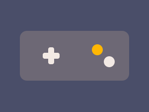

Кузница миров
2021
Песочница с крафтом
Шесть игр, которые редакция всё-таки прошла до конца.

2021
Песочница с крафтом
2019
RPG, открытый мир
2023
Хоррор про инвентарь
2020
Стратегия в реальном времени
2024
Головоломка
2018
Аркадные гонки